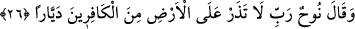

Âyette yer alan “min dûnillâh” ifâdesi, “ensâr” kelimesinden hâldir. Bu cümle
isti’nafiye olarak Allah’ın sözüyle Hz. Nûh’un duâsının kabul edildiğine işâret etmekte,
Peygamber (s.a.) Efendimiz’le onun ashabını tesellî etmektedir. Ayrıca O’na isyan edip
karşı geleni azap ve azâb sebepleriyle korkutmaktadır.
26. Nûh: «Rabbim! dedi, yeryüzünde kâfirlerden hiç kimseyi bırakma!»
“Nûh” güçlü emâreleri gördükten ve Cenâb-ı Hakk’ın vermiş olduğu haberi aldıktan
sonra onların hidâyet yolunu seçecekleri noktasında tam bir ümitsizliğe düşmesinin
ardından “dedi ki: Ey Rabbim, yeryüzünde” Sana ve Senin katından gelenlere îman
etmeyerek “kâfir olanlardan, hiç kimse bırakma!” Yâni onların köklerini kazımak
sûretiyle kendilerini helâk eyle.
Bu cümle kendisi gibi daha önce geçen bedduâ cümlesi üzerine mâtuftur. Bundan
önceki “günahları sebebiyle…” cümlesi, bu iki bedduâ cümlesi arasına girmiş
mu’teriza cümlesidir. Böylece ilk başta onların başlarına gelen suda boğulma ve
cehennem ateşinde yanma musîbetinin kendilerine ancak Nûh (a.s.)’ın saymış olduğu
günahlar sebebiyle gelmiş olduğu vurgulanmaktadır. Yine bununla onların helâk olmayı
hak edişlerinin işledikleri günahlar sebebiyle olduğuna işâret edilmektedir. Çünkü
onların suda boğulmala ve yakılmaları, Nûh (a.s.) ile kendileri aralarında geçen bir
takım sözl ve hareketler tarzında anlatılmaktadır. Eğer böyle olmasaydı, bedduâ
cümlelerinin ardından bunlar zikredilirdi.
Âyette yer alan “deyyâr” kelimesi, genel olumsuzluk ifâde eden kelimelerdendir.
Meselâ Arapçada; “ma bi’d-dâri deyyârun ev deyyûrun/evde kimse yok” denilir.
Deyyâr kelimesi “devr” ya da “dâr” kelimesinden türemiştir. Aslı “deyvâr” şeklindedir
ancak seyyid kelimesinin aslı nasıl değiştirilerek seyyid hâline getirilmişse burada da
aynı işlem yapılmıştır. “Deyyâr” kelimesi birinci yapılan açıklamaya göre âyete şu
mânâyı katıyor: “Ey Rabbim yeryüzünde oraya buraya gidip gelen ve dolaşan hiç bir
kâfir bırakma.” İkinci açıklamaya göre âyetin mânâsı; “Ey Rabbim yeryüzünde evlere
inen ve evlerinde kalan kâfirlerden hiç kimseyi bırakma.”
Bâzı âlimler “deyyâr” kelimesinin deveran kökünden gelmiş olabileceğini kabul
etmezler ve şöyle derler: Bu kelime deveran; yâni gezip dolaşma kökünden türemiş
olsaydı, yeryüzünde -bırakalım insanları- hiç bir cin ve şeytan kalmazdı. Hâlbuki mânâ
bu değildir. Âyetin asıl mânâsı: “Ey Rabbım yeryüzünde evlerde sakin olan ne kadar
kâfir varsa onların insan olanlarını helâk et” demek olur.
Fakîr (Bursevî) derim ki; bu itirâzın cevâbı kolaydır. Çünkü Nûh (a.s.)’ın
bedduâsından maksadı dâvetine muhâtap yeryüzünde gezen kişilerdir. Buna göre cinler
ve şeytanlar bu bedduânın kapsamı dışında kalırlar. Çünkü Nûh (a.s.) hem insanlara